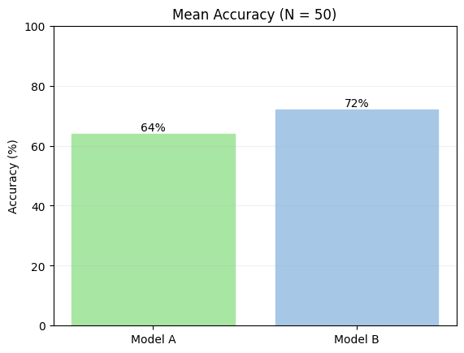

Imagine that we evaluate two models on the same prompt template with 50 prompts (a paired design). Each item gets a binary score: 1 if the model's response passes, 0 if it fails. This is a classic setup for ML benchmarks.
The paired structure is key: we can only run a reliable comparison of models if we ran them on the same inputs. If you evaluate 2 models on completely different inputs, that's not an eval, that's completely meaningless.
We'll use synthetic data for now, but the principles hold with real eval results.
import numpy as np
import promptstats as pstats
rng = np.random.default_rng(42)
N = 50
# Synthetic binary scores (1 = pass, 0 = fail)
# We rig it so that the true mean of Model A = 0.70 (performance is 70% accurate on these inputs),
# while Model B's true performance is 0.65. That's a 5-point gap.
# We use `rng.binomial` to simulate the binary outcomes for each model across N samples:
# we draw 0s and 1s with probabilities 0.70 and 0.65 for Models A and B, respectively.
scores_a = rng.binomial(1, 0.70, N).astype(float)
scores_b = rng.binomial(1, 0.65, N).astype(float)
mean_a = scores_a.mean()
mean_b = scores_b.mean()
obs_diff = mean_a - mean_b
print(f"Model A: {mean_a:.1%} ({int(scores_a.sum())}/{N} passed)")
print(f"Model B: {mean_b:.1%} ({int(scores_b.sum())}/{N} passed)")
print(f"Gap: {obs_diff:+.1%}")
Notice anything weird?
Didn't we rig Model B to be worse than Model A?!
In this sample, Model B came out ahead (72% vs 64%), even though we set Model A's true success rate higher (70% vs 65%). This isn't a bug. We've sampled randomly from a distribution, like flipping many coins per model. The same thing happens when we query LLMs. By chance, we ended up with sampled data that, just looking at it, can be misleading:

Nearly all current eval platforms will just give you a bar chart like that. You'll then conclude that "Model B is much better" and immediately drop Model A, going on your way. After all, we have N=50 samples, and that seems like a lot.
And we'd be completely wrong.
Computing a CI on the Difference¶
How can we do better, and reduce the chance of taking a wrong decision?
Statistics can save us here, or more specifically, what's called a confidence interval (CI). If we compute a confidence interval, we quantify how (un)certain we are of our estimate.
A 95% CI is a range computed from your sample such that, if you repeated the experiment many times, about 95% of those ranges would contain the true value (here, the true mean performance of the model). Think of it like a poll's margin of error: a wider CI means less certainty, a narrower CI means more. When the CI for a pairwise comparison includes zero, the data can't rule out that the true difference is zero (that there's no difference between the two things being compared).
We can use promptstats's compare_models() function to get confidence intervals on each model's mean and on the gap between them. Internally, the function treats the aligned score arrays as a paired design (each row is the same prompt seen by both models) and bootstraps per-item differences.
Here, we use
method="auto", which looks at the setup and input data types and tries to deduce the most appropriate statistical test to run.
report = pstats.compare_models(
{"Model A": scores_a, "Model B": scores_b},
method="auto",
rng=np.random.default_rng(0),
)
report.print_ci_table()
print()
report.print_pair("Model A", "Model B")
What's going on here?¶
When you run a pairwise comparison, you're asking: "across my test inputs, which model tended to score higher, and by how much?" The mean gap is the answer—in this case, -8%, meaning Model B came out ahead by about 8 points on average. While that's a useful number, it's just a point estimate from 50 samples. On its own, it doesn't tell you how confident you should be that this gap reflects a real difference, rather than just the luck of which inputs you happened to test on.
That's where the confidence interval (CI) comes in, and it's the most important thing to look at. The CI of [-24.1%, +9.0%] (the ····──────●─│────··· in the plot) is telling you: given your data, the true underlying gap between these models could plausibly be anywhere in that range. Model B could be better, or Model A could be better: both are consistent with what you observed. The CI is wide here, and straddles zero | which represents "no difference."
Why don't we see a clear difference? N=50 is a fairly small sample, the model distributions aren't that large, and our random sampling for the simulation was pretty noisy. This isn't a failure; it's the eval being honest with you about how much you can conclude. The goal as you collect more data is to watch that interval narrow, and pay attention to whether and how it does.
The effect size (
r = -0.200) and p-value (p = 0.371) are also reported here, but don't lean on them too hard. The p-value in particular is easy to misread as a pass/fail signal. With only 50 inputs, a p-value above 0.05 just means your sample is too small to rule out noise, which the wide CI already told you. The effect size is more useful: it's a standardised way of saying the gap is small-to-moderate in magnitude, which is worth knowing when you're deciding whether the difference even matters for your use case. (prompstatsuses a rank-biserial effect index by default as we can't assume LLM responses follow a normal distribution.)
Basically this plot screams—we can't decide what model is better. We need to keep collecting eval inputs, and possibly expand our test set. If the 95% CI narrows and stabilizes such that it doesn't include 0—e.g., imagine the plot looks like:
Model B (<0) ··───●───·· | (>0) Model A
Then we might draw a firmer conclusion that Model B is reliably better for these inputs. But, for now, we don't know.
NOTE: There are many ways to estimate confidence intervals. When we set
method="auto",prompstatsimplements reasonable defaults, looking at your data type, conditions, and sample size and choosing a method backed by prior research and simulations. Here, notice thatbayes_binaryis named as the test.promptstatslooked at our data and deduced it was binary (all 0 or 1s). Since we're also comparing the exact same inputs to two different models (a "pairwise" comparison),promptstatschose the Bayesian pairwise method frombayes_evals(https://github.com/sambowyer/bayes_evals) for calculating confidence intervals, as our simulations suggest it is the most reliable statistical method for this data type and sample size. However, if you'd like to use another method, you can (e.g., setmethod="newcombe").
Improving the test: Prefer to have multiple runs¶
Actually, there's something we should've done better here. LLMs are stochastic, but we just ran 50 inputs a single time through these models. That's actually a bad idea. If we want to be more precise, we should at least add multiple runs to quantify how much that performance is due to chance.
Let's do that now—let's add multiple runs, say N=10, and see what happens.
import random
random.seed(40)
# The number of "inputs" to the single prompt template under test,
# which we can think of as 50 different questions or tasks that the models are being evaluated on.
N_INPUTS = 50
# The number of runs per input, which could represent multiple evaluation runs with different random seeds
# or conditions.
N_RUNS = 10
# We'll use synthetic data to simulate the scores for Model A and Model B across these inputs and runs.
# We use the same probabilities as before (0.70 for Model A and 0.65 for Model B) to
# generate binary scores (1 for pass, 0 for fail).
model_a_runs = [
[1.0 if random.random() < 0.70 else 0.0 for _ in range(N_RUNS)]
for _ in range(N_INPUTS)
]
model_b_runs = [
[1.0 if random.random() < 0.65 else 0.0 for _ in range(N_RUNS)]
for _ in range(N_INPUTS)
]
# The data now looks like:
#
# model_a_runs = [
# [1.0, 1.0, 0.0], # input 1, scores for runs 1-3
# [0.0, 1.0, 1.0], # input 2, scores for runs 1-3
# [0.0, 0.0, 1.0], # input 3, scores for runs 1-3
# ...
# ]
#
# We have 50 inputs, and for each input we have 3 runs of scores for
# Model A and Model B. Each score is either 1.0 (pass) or 0.0 (fail),
# generated according to the specified probabilities.
# We pass these nested lists directly to compare_models, which will automatically
# interpret them as multiple runs per input and compute the appropriate statistics:
report_multirun = pstats.compare_models(
{"Model A": model_a_runs, "Model B": model_b_runs},
method="auto",
rng=np.random.default_rng(1),
)
def mean(vals):
return sum(vals) / len(vals)
for label, rows in {"Model A": model_a_runs, "Model B": model_b_runs}.items():
run_means = [mean(run_vals) for run_vals in zip(*rows)]
overall = mean([x for row in rows for x in row])
run_means_str = [f"{m:.1%}" for m in run_means]
print(f"{label}: overall={overall:.1%} | run means={run_means_str}")
print()
pair_multirun = report_multirun.pairwise.get("Model A", "Model B")
pair_multirun.summary()
Great: now Model A is coming out on top, which is what we expected. The 95% CI is [+0.5%, +16.1%], which means that after accounting for both input sampling noise and run-to-run model randomness, the plausible true gap is leaning much more positive. As it excludes 0, at 95% confidence, we might conclude that Model A is reliably better for the specific prompt we ran inputs over. As we see, multiple runs reduce the chance that one lucky (or unlucky) pass through stochastic models drives your conclusion.
For stats nerds, actually, under the hood,
promptstatsused a nested bootstrap here, not just a regular smooth bootstrap. It did this to respect the fact that "runs" are for the same input, not independent samples. Treating them as independent from input would inflate the confidence of our estimates, tightening our CIs unreliably.
What about a real-world example?¶
The synthetic demo is useful for intuition, but in practice you'll have raw outputs from actual model calls.
To give us a sense of real outputs, I made a basic sentiment analysis eval, which you can run yourself at examples/compare_models_multirun.py. It outputs a CSV file called basic_sentiment_eval_2models.csv.
The CSV has one row per model × template × input × run, and looks like this:
| model_name | template_label | input_idx | run_idx | accuracy |
|---|---|---|---|---|
| gpt-4.1-nano | Minimal | 0 | 0 | 1.0 |
| gpt-4.1-nano | Minimal | 0 | 1 | 1.0 |
| mistralai/ministral-8b-2512 | Minimal | 0 | 0 | 0.0 |
| ... | ... | ... | ... | ... |
It covers two models (gpt-4.1-nano and mistralai/ministral-8b-2512), multiple prompt template variants (Minimal, Few-shot, Chain-of-thought, etc.), 27 example inputs, and 3 runs per model.
In the next cell, we load that CSV, pull out the accuracy column (binary scores), and pass aligned multirun rows into pstats.compare_models(...).
import pandas as pd
from pathlib import Path
# 1. Load and Filter
csv_path = "basic_sentiment_eval_2models.csv"
df = pd.read_csv(csv_path)
# The CSV file contains headers like:
# model_name, template_label, input_idx, input_label, run_idx, ... ,accuracy
# We filter to the "Minimal" template, which is the single prompt template we're analyzing.
# In reality, the CSV contains multiple prompt templates, but for this example we focus on
# just one to simplify things.
minimal = df[df["template_label"] == "Minimal"].copy()
# 2. Pivot the data
# This creates a table where rows are (input, run) and columns are model names
pivot_df = minimal.pivot(
index=["input_idx", "run_idx"],
columns="model_name",
values="accuracy"
).dropna() # dropna() ensures we only keep "complete" rows
# 3. Restructure for the stats tool
# We want: {model_name: [[input1_runs], [input2_runs], ...]}
scores_by_model = {
model: pivot_df[model].groupby("input_idx").apply(list).tolist()
for model in pivot_df.columns
}
# 4. Run analysis
report = pstats.compare_models(
scores_by_model,
method="auto",
rng=np.random.default_rng(7),
)
# 5. Quick Summary
n_inputs = len(pivot_df.index.get_level_values("input_idx").unique())
n_runs = len(pivot_df.index.get_level_values("run_idx").unique())
print(f"Template: Minimal | Inputs: {n_inputs} | Runs/Input: {n_runs}")
for label, stats in report.model_stats.items():
print(f"{label}: {stats.mean:.1%} (95% CI: [{stats.ci_low:.1%}, {stats.ci_high:.1%}])")
print()
# Pairwise comparison summary with ASCII interval plot and verdict
pair = report.pairwise.get("gpt-4.1-nano", "mistralai/ministral-8b-2512")
pair.summary()
We don't reach a conclusion here, even with 3 runs per input, since there's not enough data to say. We're leaning towards gpt-4.1-nano being better for this prompt, but that difference could be chance.
On the
100.4%CI upper bound, which looks weird: Bootstrap CIs don't know anything about the bounds of your data. They thus can slightly overshoot those bounds when the true value is near the boundary. Read100.4%as "consistent with near-perfect performance": the data support a very high accuracy forgpt-4.1-nano.
Bonus: Couldn't we run it across all templates to get a tighter estimate of model performance?¶
We could compare performance across all prompt templates in the dataset, but this might lead to inflated, over-confident conclusions. Why?
Each template runs the exact same inputs. This means the results are correlated—a difficult input for one template is likely difficult for another—yet basic statistical procedures would treat these as entirely new, independent data points. This false sense of 'extra data' can lead to 95% CIs that look tight and confident but are actually unreliable.
If fact, we already saw something like this, but
promptstatshandled it silently: it used the nested bootstrap to handle runs>1. That's part of why having a stats library for LLM evals can be helpful: it helps you avoid these traps.
To handle that scenario appropriately, we'd need something like a mixed effects model or a blocked boostrap. A later example will deal with this.
Interactive CI Visualizer¶
To gain intuition for CIs and how they're derived from samples, here's an interactive visualization. Run the next cell to see an animated explanation of how repeated finite samples produce confidence intervals for the gap $(A - B)$.
- The top panel shows sampled model scores and sample means.
- The bottom panel stacks the resulting confidence intervals.
- Green intervals cover the true effect; red intervals miss it.